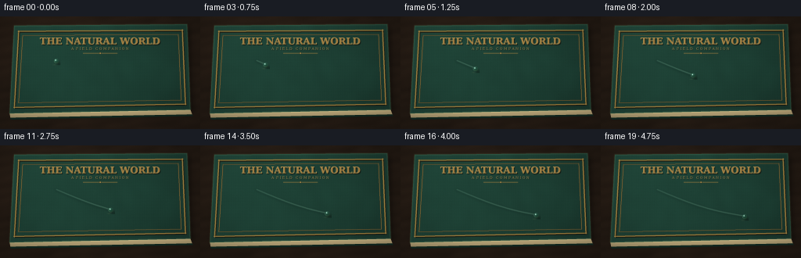
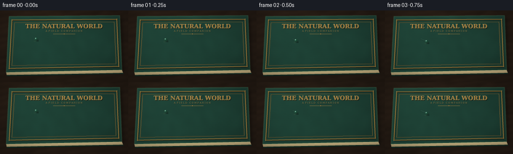

CODING AGENTS AS PIXEL WORLD MODELS
traex/DeepSeek-V4.1-Flash · phygen_040
点击播放 · 原生 RGB 像素
逐轮保存的候选
回放视频、检查图与代码变化。
每份候选均可单独播放。实际图片检查记录在下方工具轨迹中。
候选 01播放与检查图
点击播放 · 原生 RGB 像素
展开代码变化
--- 上一保存版本
+++ 本次保存版本
@@ -0,0 +1,383 @@
+from pathlib import Path
+import math
+
+import cv2
+import numpy as np
+from PIL import Image, ImageDraw, ImageFont
+from scipy.ndimage import gaussian_filter, map_coordinates
+
+import artifact_io
+
+
+CASE_DIR = Path(__file__).resolve().parent
+WIDTH = 256
+HEIGHT = 144
+FRAMES = 20
+FPS = 4.0
+SS = 4
+HW = WIDTH * SS
+HH = HEIGHT * SS
+
+
+def smoothstep(value):
+ value = np.clip(value, 0.0, 1.0)
+ return value * value * (3.0 - 2.0 * value)
+
+
+def polygon_mask(points, shape):
+ mask = np.zeros(shape[:2], dtype=np.uint8)
+ cv2.fillPoly(mask, [np.round(points).astype(np.int32)], 255)
+ return mask.astype(np.float32) / 255.0
+
+
+def inset_polygon(points, scale_x, scale_y):
+ center = points.mean(axis=0)
+ scale = np.array([scale_x, scale_y], dtype=np.float32)
+ return center + (points - center) * scale
+
+
+def render_table(rng):
+ yy, xx = np.mgrid[0:HH, 0:HW].astype(np.float32)
+ broad = gaussian_filter(rng.normal(size=(HH, HW)).astype(np.float32), 32)
+ broad /= np.max(np.abs(broad)) + 1e-6
+ fine = gaussian_filter(rng.normal(size=(HH, HW)).astype(np.float32), 1.1)
+ fine /= np.max(np.abs(fine)) + 1e-6
+
+ grain = (
+ 0.52 * np.sin(0.021 * xx + 0.115 * yy + 1.8 * broad)
+ + 0.26 * np.sin(0.009 * xx - 0.075 * yy + 0.7)
+ + 0.15 * np.sin(0.067 * yy + 0.8 * np.sin(0.006 * xx))
+ )
+ light = 0.82 + 0.055 * grain + 0.07 * broad + 0.025 * fine
+ light *= 0.91 + 0.12 * np.exp(-((xx - 0.25 * HW) ** 2 + (yy - 0.2 * HH) ** 2) / (0.34 * HW) ** 2)
+
+ wood = np.array([48.0, 37.0, 30.0], dtype=np.float32)
+ image = wood[None, None, :] * light[:, :, None]
+ image[:, :, 0] *= 1.035
+ image[:, :, 2] *= 0.90
+ return np.clip(image, 0, 255)
+
+
+def render_cover_texture(rng):
+ yy, xx = np.mgrid[0:HH, 0:HW].astype(np.float32)
+ weave = (
+ 0.50 * np.sin(2.0 * np.pi * xx / 6.1 + 0.38 * np.sin(yy / 31.0))
+ + 0.50 * np.sin(2.0 * np.pi * yy / 5.3 + 0.25 * np.sin(xx / 47.0))
+ )
+ fibers = gaussian_filter(rng.normal(size=(HH, HW)).astype(np.float32), 0.8)
+ fibers /= np.max(np.abs(fibers)) + 1e-6
+ mottle = gaussian_filter(rng.normal(size=(HH, HW)).astype(np.float32), 26)
+ mottle /= np.max(np.abs(mottle)) + 1e-6
+
+ diagonal = (xx / HW) * 0.62 + (yy / HH) * 0.38
+ illumination = 1.09 - 0.22 * diagonal + 0.055 * mottle
+ illumination += 0.045 * np.exp(-((xx - 0.20 * HW) ** 2 + (yy - 0.12 * HH) ** 2) / (0.34 * HW) ** 2)
+ base = np.array([31.0, 66.0, 54.0], dtype=np.float32)
+ image = base[None, None, :] * illumination[:, :, None]
+ image += (2.3 * weave + 1.8 * fibers)[:, :, None] * np.array([0.72, 1.0, 0.88])
+ return np.clip(image, 0, 255)
+
+
+def add_gold_border(image, points):
+ overlay = Image.new("RGBA", (HW, HH), (0, 0, 0, 0))
+ draw = ImageDraw.Draw(overlay)
+
+ outer = inset_polygon(points, 0.947, 0.866)
+ inner = inset_polygon(points, 0.900, 0.770)
+ shadow = inset_polygon(points, 0.947, 0.866) + np.array([3.0, 4.0], dtype=np.float32)
+
+ def closed_line(vertices, color, width, offset=(0, 0)):
+ shifted = [(float(x + offset[0]), float(y + offset[1])) for x, y in vertices]
+ draw.line(shifted + [shifted[0]], fill=color, width=width, joint="curve")
+
+ closed_line(shadow, (25, 22, 15, 180), 9)
+ closed_line(outer, (133, 101, 45, 235), 7)
+ closed_line(outer, (210, 169, 87, 220), 3)
+ closed_line(inner, (84, 68, 37, 205), 5)
+ closed_line(inner, (176, 139, 72, 210), 2)
+
+ # Small corner diamonds give the tooling a hand-finished look.
+ for point in outer:
+ x, y = point
+ size = 6.0
+ diamond = [(x, y - size), (x + size, y), (x, y + size), (x - size, y)]
+ draw.polygon(diamond, fill=(203, 161, 79, 220), outline=(73, 55, 29, 220))
+
+ base = Image.fromarray(np.clip(image, 0, 255).astype(np.uint8), "RGB").convert("RGBA")
+ return np.asarray(Image.alpha_composite(base, overlay).convert("RGB"), dtype=np.float32)
+
+
+def load_font(size, bold=True):
+ names = [
+ "/usr/share/fonts/truetype/dejavu/DejaVuSerif-Bold.ttf" if bold else
+ "/usr/share/fonts/truetype/dejavu/DejaVuSerif.ttf",
+ "/usr/share/fonts/truetype/liberation2/LiberationSerif-Bold.ttf" if bold else
+ "/usr/share/fonts/truetype/liberation2/LiberationSerif-Regular.ttf",
+ ]
+ for name in names:
+ if Path(name).is_file():
+ return ImageFont.truetype(name, size)
+ return ImageFont.load_default()
+
+
+def add_cover_title(image):
+ overlay = Image.new("RGBA", (HW, HH), (0, 0, 0, 0))
+ draw = ImageDraw.Draw(overlay)
+ title_font = load_font(47, bold=True)
+ subtitle_font = load_font(18, bold=False)
+
+ title = "THE NATURAL WORLD"
+ subtitle = "A F I E L D C O M P A N I O N"
+ title_box = draw.textbbox((0, 0), title, font=title_font)
+ title_w = title_box[2] - title_box[0]
+ title_x = (HW - title_w) // 2
+ title_y = 98
+ subtitle_box = draw.textbbox((0, 0), subtitle, font=subtitle_font)
+ subtitle_w = subtitle_box[2] - subtitle_box[0]
+ subtitle_x = (HW - subtitle_w) // 2
+ subtitle_y = 154
+
+ draw.text((title_x + 4, title_y + 5), title, font=title_font, fill=(19, 27, 21, 220))
+ draw.text((title_x - 1, title_y - 1), title, font=title_font, fill=(234, 199, 126, 210))
+ draw.text((title_x, title_y), title, font=title_font, fill=(172, 133, 68, 245))
+
+ draw.text((subtitle_x + 2, subtitle_y + 3), subtitle, font=subtitle_font, fill=(20, 28, 21, 190))
+ draw.text((subtitle_x, subtitle_y), subtitle, font=subtitle_font, fill=(184, 147, 82, 230))
+
+ rule_y = 188
+ rule_half = 88
+ draw.line([(HW // 2 - rule_half, rule_y), (HW // 2 + rule_half, rule_y)],
+ fill=(171, 132, 67, 205), width=3)
+ draw.ellipse([(HW // 2 - 5, rule_y - 5), (HW // 2 + 5, rule_y + 5)],
+ fill=(206, 166, 87, 220), outline=(70, 53, 30, 180), width=2)
+
+ base = Image.fromarray(np.clip(image, 0, 255).astype(np.uint8), "RGB").convert("RGBA")
+ return np.asarray(Image.alpha_composite(base, overlay).convert("RGB"), dtype=np.float32)
+
+
+def add_page_block(image, page_points, back_points):
+ mask = polygon_mask(page_points, (HH, HW))
+ yy, xx = np.mgrid[0:HH, 0:HW].astype(np.float32)
+ top_y = np.min(page_points[:, 1])
+ bottom_y = np.max(page_points[:, 1])
+ vertical = np.clip((yy - top_y) / max(1.0, bottom_y - top_y), 0.0, 1.0)
+ striation = 0.5 + 0.5 * np.sin(yy * 1.22 + 0.35 * np.sin(xx * 0.018))
+ page_rgb = np.array([188.0, 172.0, 139.0], dtype=np.float32)
+ shade = 0.88 + 0.13 * (1.0 - vertical) + 0.035 * striation
+ page = page_rgb[None, None, :] * shade[:, :, None]
+ page[:, :, 0] *= 1.02
+ page[:, :, 2] *= 0.90
+ image = image * (1.0 - mask[:, :, None]) + page * mask[:, :, None]
+
+ back_mask = polygon_mask(back_points, (HH, HW))
+ back_color = np.array([18.0, 42.0, 34.0], dtype=np.float32)
+ image = image * (1.0 - back_mask[:, :, None]) + back_color[None, None, :] * back_mask[:, :, None]
+ return image
+
+
+def build_background():
+ rng = np.random.default_rng(1407)
+ image = render_table(rng)
+
+ cover_points = np.array(
+ [[72.0, 47.0], [956.0, 40.0], [973.0, 477.0], [49.0, 496.0]],
+ dtype=np.float32,
+ )
+ page_points = np.array(
+ [[973.0, 477.0], [982.0, 501.0], [53.0, 518.0], [49.0, 496.0]],
+ dtype=np.float32,
+ )
+ back_points = np.array(
+ [[982.0, 501.0], [987.0, 509.0], [54.0, 527.0], [53.0, 518.0]],
+ dtype=np.float32,
+ )
+
+ shadow_mask = np.zeros((HH, HW), dtype=np.uint8)
+ shadow_points = cover_points + np.array([12.0, 17.0], dtype=np.float32)
+ cv2.fillPoly(shadow_mask, [np.round(shadow_points).astype(np.int32)], 255)
+ shadow = gaussian_filter(shadow_mask.astype(np.float32) / 255.0, 17.0)
+ image *= (1.0 - 0.48 * shadow[:, :, None])
+
+ image = add_page_block(image, page_points, back_points)
+
+ cover_mask = polygon_mask(cover_points, (HH, HW))
+ cover = render_cover_texture(rng)
+ cover = add_gold_border(cover, cover_points)
+ cover = add_cover_title(cover)
+ image = image * (1.0 - cover_mask[:, :, None]) + cover * cover_mask[:, :, None]
+
+ # A restrained bevel catches warm light along the top edge of the cover.
+ edge = np.zeros((HH, HW), dtype=np.float32)
+ cv2.polylines(edge, [np.round(cover_points).astype(np.int32)], True, 1.0, 5, cv2.LINE_AA)
+ edge = gaussian_filter(edge, 2.0)
+ image += edge[:, :, None] * np.array([18.0, 24.0, 16.0], dtype=np.float32)
+ return np.clip(image, 0, 255), cover_points
+
+
+def motion_path(t):
+ eased = 0.34 * t + 0.66 * smoothstep(t)
+ x = 72.0 + 112.0 * eased + 2.0 * math.sin(math.pi * eased)
+ y = 57.0 + 34.0 * eased + 5.2 * math.sin(math.pi * eased)
+ return x, y
+
+
+def add_wet_trail(image, frame_index):
+ if frame_index == 0:
+ return image
+
+ current_t = frame_index / (FRAMES - 1)
+ trail_alpha = np.zeros((HH, HW), dtype=np.float32)
+ gloss_alpha = np.zeros((HH, HW), dtype=np.float32)
+ sample_count = max(28, frame_index * 14)
+ points = []
+ for index in range(sample_count + 1):
+ t = current_t * index / sample_count
+ x, y = motion_path(t)
+ points.append((x * SS, y * SS))
+
+ for index in range(sample_count):
+ age = current_t * (1.0 - index / sample_count)
+ fade = math.exp(-age / 2.7)
+ p0 = tuple(int(round(v)) for v in points[index])
+ p1 = tuple(int(round(v)) for v in points[index + 1])
+ width = max(9, int(round(SS * (3.1 + 1.0 * fade))))
+ alpha = int(round(58 * fade))
+ cv2.line(trail_alpha, p0, p1, alpha / 255.0, width, cv2.LINE_AA)
+ cv2.line(gloss_alpha, (p0[0], p0[1] - 2), (p1[0], p1[1] - 2),
+ 0.17 * fade, max(2, SS), cv2.LINE_AA)
+
+ trail_alpha = gaussian_filter(trail_alpha, 4.0)
+ gloss_alpha = gaussian_filter(gloss_alpha, 1.6)
+ wet_color = np.array([13.0, 37.0, 31.0], dtype=np.float32)
+ image = image * (1.0 - 0.62 * trail_alpha[:, :, None]) + wet_color[None, None, :] * (0.62 * trail_alpha[:, :, None])
+ image += gloss_alpha[:, :, None] * np.array([77.0, 98.0, 83.0], dtype=np.float32)
+ return image
+
+
+def sample_bilinear(image, xs, ys):
+ result = np.empty(xs.shape + (3,), dtype=np.float32)
+ for channel in range(3):
+ result[:, :, channel] = map_coordinates(
+ image[:, :, channel], [ys, xs], order=1, mode="nearest"
+ )
+ return result
+
+
+def add_droplet(image, cx, cy, phase):
+ radius_x = 13.1 + 0.30 * math.sin(phase * 1.7)
+ radius_y = 11.8 + 0.22 * math.cos(phase * 1.3)
+ pad = 21
+ x0 = int(math.floor(cx - pad))
+ x1 = int(math.ceil(cx + pad))
+ y0 = int(math.floor(cy - pad))
+ y1 = int(math.ceil(cy + pad))
+ x0, y0 = max(0, x0), max(0, y0)
+ x1, y1 = min(HW, x1), min(HH, y1)
+
+ yy, xx = np.mgrid[y0:y1, x0:x1].astype(np.float32)
+ dx = xx - cx
+ dy = yy - cy
+ qx = dx / radius_x
+ qy = dy / radius_y
+ q2 = qx * qx + qy * qy
+ dist = np.sqrt(q2)
+ inside = smoothstep((1.015 - dist) / 0.045)
+
+ shadow_dx = (xx - cx - 3.2 * SS) / (radius_x * 1.35)
+ shadow_dy = (yy - cy - 4.4 * SS) / (radius_y * 1.40)
+ shadow = np.exp(-1.7 * (shadow_dx * shadow_dx + shadow_dy * shadow_dy))
+ shadow = gaussian_filter(shadow, 4.0)
+ region = image[y0:y1, x0:x1]
+ region *= (1.0 - 0.36 * shadow[:, :, None])
+
+ caustic_dx = (xx - cx + 2.4 * SS) / (radius_x * 0.92)
+ caustic_dy = (yy - cy - 5.3 * SS) / (radius_y * 0.48)
+ caustic = np.exp(-2.2 * (caustic_dx * caustic_dx + caustic_dy * caustic_dy))
+ region += caustic[:, :, None] * np.array([24.0, 20.0, 9.0], dtype=np.float32)
+
+ z = np.sqrt(np.clip(1.0 - q2, 0.0, 1.0))
+ # The compressed sampling region acts as a spherical lens over the cloth.
+ lens_x = cx + qx * radius_x * (0.58 + 0.055 * z) + 0.9 * SS
+ lens_y = cy + qy * radius_y * (0.63 + 0.050 * z) + 1.6 * SS
+ refracted = sample_bilinear(image, lens_x, lens_y)
+ smooth_refraction = cv2.GaussianBlur(refracted, (0, 0), 1.25 * SS)
+ refracted = 0.68 * refracted + 0.32 * smooth_refraction
+ refracted *= np.array([0.84, 1.00, 0.91], dtype=np.float32)[None, None, :]
+ refracted += np.array([4.0, 11.0, 9.0], dtype=np.float32)[None, None, :]
+
+ normal = np.stack([qx, qy, z], axis=2)
+ light = np.array([-0.47, -0.66, 0.59], dtype=np.float32)
+ light /= np.linalg.norm(light)
+ half = light + np.array([0.0, 0.0, 1.0], dtype=np.float32)
+ half /= np.linalg.norm(half)
+ ndoth = np.sum(normal * half[None, None, :], axis=2)
+ specular = np.power(np.clip(ndoth, 0.0, 1.0), 44.0)
+
+ sky = np.exp(
+ -(((qx + 0.36) / 0.27) ** 2 + ((qy + 0.43) / 0.49) ** 2)
+ )
+ sky *= smoothstep((1.01 - dist) / 0.22)
+ refracted += sky[:, :, None] * np.array([60.0, 76.0, 70.0], dtype=np.float32)
+
+ fresnel = np.exp(-((1.0 - dist) / 0.105) ** 2)
+ rim_side = np.clip(0.58 - 0.44 * qx - 0.36 * qy, 0.0, 1.0)
+ refracted = refracted * (1.0 - 0.52 * fresnel[:, :, None])
+ refracted += fresnel[:, :, None] * rim_side[:, :, None] * np.array([31.0, 57.0, 50.0], dtype=np.float32)
+
+ lower_rim = fresnel * np.clip(0.20 + 0.55 * qy, 0.0, 1.0)
+ refracted += lower_rim[:, :, None] * np.array([37.0, 27.0, 11.0], dtype=np.float32)
+ refracted += specular[:, :, None] * np.array([160.0, 174.0, 160.0], dtype=np.float32)
+
+ region[:] = region * (1.0 - inside[:, :, None]) + np.clip(refracted, 0, 255) * inside[:, :, None]
+
+ glint = np.exp(
+ -(((xx - (cx - 0.34 * radius_x)) / (0.075 * radius_x)) ** 2
+ + ((yy - (cy - 0.47 * radius_y)) / (0.090 * radius_y)) ** 2)
+ )
+ region += glint[:, :, None] * np.array([205.0, 215.0, 202.0], dtype=np.float32)
+
+ tiny = np.exp(
+ -(((xx - (cx + 0.37 * radius_x)) / (0.065 * radius_x)) ** 2
+ + ((yy - (cy - 0.31 * radius_y)) / (0.065 * radius_y)) ** 2)
+ )
+ region += tiny[:, :, None] * np.array([68.0, 84.0, 78.0], dtype=np.float32)
+ return image
+
+
+def finish_frame(image, frame_index):
+ bright = np.clip((image - 182.0) / 73.0, 0.0, 1.0)
+ bloom = cv2.GaussianBlur(bright, (0, 0), 5.0)
+ image += bloom * np.array([10.0, 8.0, 4.0], dtype=np.float32)
+
+ yy, xx = np.mgrid[0:HH, 0:HW].astype(np.float32)
+ nx = (xx - HW * 0.48) / (HW * 0.62)
+ ny = (yy - HH * 0.46) / (HH * 0.68)
+ vignette = np.clip(1.0 - 0.20 * (nx * nx + ny * ny), 0.76, 1.0)
+ image *= vignette[:, :, None]
+
+ rng = np.random.default_rng(9300 + frame_index)
+ grain = rng.normal(0.0, 0.75, (HH, HW, 1)).astype(np.float32)
+ image += grain
+ image = np.clip(image, 0, 255).astype(np.uint8)
+ return cv2.resize(image, (WIDTH, HEIGHT), interpolation=cv2.INTER_AREA)
+
+
+def generate():
+ background, _ = build_background()
+ frames = []
+ for frame_index in range(FRAMES):
+ t = frame_index / (FRAMES - 1)
+ x, y = motion_path(t)
+ frame = background.copy()
+ frame = add_wet_trail(frame, frame_index)
+ frame = add_droplet(frame, x * SS, y * SS, math.pi * 2.0 * t)
+ frames.append(finish_frame(frame, frame_index))
+
+ frames = np.stack(frames, axis=0)
+ assert frames.shape == (FRAMES, HEIGHT, WIDTH, 3)
+ assert frames.dtype == np.uint8
+ artifact_io.save(frames, CASE_DIR)
+
+
+if __name__ == "__main__":
+ generate()
候选 02播放与检查图
点击播放 · 原生 RGB 像素

展开代码变化
--- 上一保存版本
+++ 本次保存版本
@@ -240,17 +240,17 @@
fade = math.exp(-age / 2.7)
p0 = tuple(int(round(v)) for v in points[index])
p1 = tuple(int(round(v)) for v in points[index + 1])
- width = max(9, int(round(SS * (3.1 + 1.0 * fade))))
- alpha = int(round(58 * fade))
+ width = max(11, int(round(SS * (3.4 + 1.0 * fade))))
+ alpha = int(round(76 * fade))
cv2.line(trail_alpha, p0, p1, alpha / 255.0, width, cv2.LINE_AA)
- cv2.line(gloss_alpha, (p0[0], p0[1] - 2), (p1[0], p1[1] - 2),
- 0.17 * fade, max(2, SS), cv2.LINE_AA)
+ cv2.line(gloss_alpha, (p0[0], p0[1] - 3), (p1[0], p1[1] - 3),
+ 0.31 * fade, max(2, SS), cv2.LINE_AA)
trail_alpha = gaussian_filter(trail_alpha, 4.0)
gloss_alpha = gaussian_filter(gloss_alpha, 1.6)
- wet_color = np.array([13.0, 37.0, 31.0], dtype=np.float32)
+ wet_color = np.array([10.0, 31.0, 27.0], dtype=np.float32)
image = image * (1.0 - 0.62 * trail_alpha[:, :, None]) + wet_color[None, None, :] * (0.62 * trail_alpha[:, :, None])
- image += gloss_alpha[:, :, None] * np.array([77.0, 98.0, 83.0], dtype=np.float32)
+ image += gloss_alpha[:, :, None] * np.array([116.0, 143.0, 122.0], dtype=np.float32)
return image
@@ -302,8 +302,8 @@
refracted = sample_bilinear(image, lens_x, lens_y)
smooth_refraction = cv2.GaussianBlur(refracted, (0, 0), 1.25 * SS)
refracted = 0.68 * refracted + 0.32 * smooth_refraction
- refracted *= np.array([0.84, 1.00, 0.91], dtype=np.float32)[None, None, :]
- refracted += np.array([4.0, 11.0, 9.0], dtype=np.float32)[None, None, :]
+ refracted *= np.array([0.88, 1.04, 0.95], dtype=np.float32)[None, None, :]
+ refracted += np.array([7.0, 15.0, 13.0], dtype=np.float32)[None, None, :]
normal = np.stack([qx, qy, z], axis=2)
light = np.array([-0.47, -0.66, 0.59], dtype=np.float32)
@@ -319,13 +319,13 @@
sky *= smoothstep((1.01 - dist) / 0.22)
refracted += sky[:, :, None] * np.array([60.0, 76.0, 70.0], dtype=np.float32)
- fresnel = np.exp(-((1.0 - dist) / 0.105) ** 2)
+ fresnel = np.exp(-((1.0 - dist) / 0.125) ** 2)
rim_side = np.clip(0.58 - 0.44 * qx - 0.36 * qy, 0.0, 1.0)
refracted = refracted * (1.0 - 0.52 * fresnel[:, :, None])
- refracted += fresnel[:, :, None] * rim_side[:, :, None] * np.array([31.0, 57.0, 50.0], dtype=np.float32)
+ refracted += fresnel[:, :, None] * rim_side[:, :, None] * np.array([51.0, 82.0, 72.0], dtype=np.float32)
lower_rim = fresnel * np.clip(0.20 + 0.55 * qy, 0.0, 1.0)
- refracted += lower_rim[:, :, None] * np.array([37.0, 27.0, 11.0], dtype=np.float32)
+ refracted += lower_rim[:, :, None] * np.array([64.0, 48.0, 19.0], dtype=np.float32)
refracted += specular[:, :, None] * np.array([160.0, 174.0, 160.0], dtype=np.float32)
region[:] = region * (1.0 - inside[:, :, None]) + np.clip(refracted, 0, 255) * inside[:, :, None]
可观测工具轨迹
实际执行的命令与返回图片。
命令 1exit 0
/bin/bash -c "pwd && rg --files -g '"'!*__pycache__*'"' | sed -n '1,200p'"
命令 2exit 0
/bin/bash -c "sed -n '1,240p' prompt.txt"
命令 3exit 0
/bin/bash -c "sed -n '1,280p' GENERATION_RULES.md"
命令 4exit 0
/bin/bash -c 'cat task_spec.json'
命令 5exit 0
/bin/bash -c "sed -n '1,260p' artifact_io.py"
命令 6exit 0
/bin/bash -c "sed -n '1,240p' player_template.html"
命令 7exit 0
/bin/bash -c "python - <<'PY' import importlib.util for m in ['numpy','PIL','cv2','imageio','scipy']: print(m, bool(importlib.util.find_spec(m))) PY"
命令 8exit 0
/bin/bash -c "fc-match 'DejaVu Serif' | head -1 && fc-match 'DejaVu Sans' | head -1"
命令 9exit 0
/bin/bash -c 'python generate.py'
命令 10exit 0
/bin/bash -c 'python generate.py'
命令 11exit 0
/bin/bash -c "python - <<'PY'
from pathlib import Path
import numpy as np
from PIL import Image
p=Path('.')
z=np.load('pixels.npz')['pixels']
print('pixels', z.shape, z.dtype, 'range', int(z.min()), int(z.max()))
files=sorted((p/'frames').glob('*.png'))
print('frames', len(files), Image.open(files[0]).size, Image.open(files[-1]).size)
frames=np.stack([np.asarray(Image.open(f)) for f in files])
d=np.abs(frames[1:].astype(np.int16)-frames[:-1].astype(np.int16))
print('consecutive mean abs delta', round(float(d.mean()),3), 'min/max', round(float(d.mean(axis=(1,2,3)).min()),3), round(float(d.mean(axis=(1,2,3)).max()),3))
print('unique colors first/last', len(np.unique(frames[0].reshape(-1,3),axis=0)), len(np.unique(frames[-1].reshape(-1,3),axis=0)))
print('html bytes', (p/'index.html').stat().st_size)
PY"命令 12exit 0
/bin/bash -c 'git status --short 2>/dev/null || true; ls -lh generate.py pixels.npz index.html inspection.png transition_check.png frames/00.png frames/19.png'
视觉工具实际返回图片 1

视觉工具实际返回图片 2

视觉工具实际返回图片 3
视觉工具实际返回图片 4

保存候选 2 份；完成命令 12 次；可验证图片返回 4 张。原始 API 响应与完整日志保留在本地。